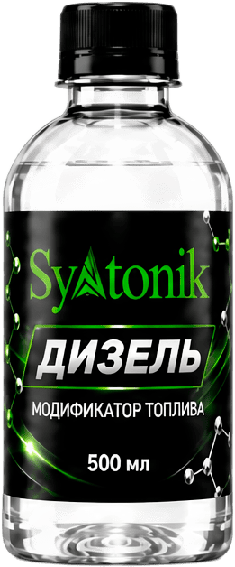
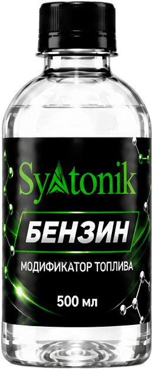
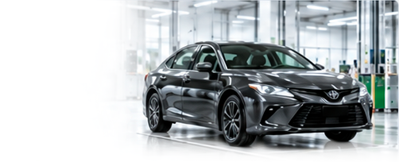

Такси
Добавка Syntonik для такси и таксопарков: дозировка 1 мл на 10 л, экономия 5–8 л за смену, чистые форсунки при городском цикле. За
Смотреть →Сегменты
Применение добавки Syntonik по нишам: такси, грузовой транспорт, спецтехника, госпредприятия, котельные, ГБО и другие сегменты — дозировка, эффект и расчёт экономии.
Добавка Syntonik для такси и таксопарков: дозировка 1 мл на 10 л, экономия 5–8 л за смену, чистые форсунки при городском цикле. За
Смотреть →Добавка Syntonik для курьерских машин и фургонов: снижение расхода в городском цикле, дозировка на бак, расчёт на высоком пробеге.
Смотреть →Syntonik для КамАЗ, МАЗ, Mercedes Actros и парков дальнобоя: расчёт экономии на 40 000 л в год, дозировка 1 мл на 10 л, пилот по д
Смотреть →Добавка Syntonik для строительной и карьерной техники: работа на холостых, пыль и перегрузки. Дозировка на канистру, экономия по с
Смотреть →Добавка Syntonik для тракторов, комбайнов и агротехники: сезонная экономия ДТ, дозировка на бак, стабильная работа на пиковых нагр
Смотреть →Добавка Syntonik для автобусных парков: экономия на городском маршруте, холодный запуск зимой, дозировка на большую ёмкость бака.
Смотреть →Добавка Syntonik для служебных машин предприятия: централизованная закупка, дозировка, экономия топливной статьи расходов и отчётн
Смотреть →Добавка Syntonik для каршеринга: высокий оборот машин, разные водители, чистая топливная система и прогнозируемый расход по парку.
Смотреть →Добавка Syntonik для лодочных моторов и катеров: стабильный пуск после стоянки, чистый карбюратор/инжектор, дозировка на сезон.
Смотреть →Добавка Syntonik для дизель-генераторов и электростанций: стабильная работа на холостых, старты под нагрузкой, дозировка на топлив
Смотреть →
Syntonik для машин на ГБО: доза в бензиновый бак, чистые форсунки и клапаны при работе на пропане, регламент для газового автомоби
Смотреть →
Особенности применения Syntonik на метановом транспорте: бензиновый пусковой контур, дозировка, обслуживание газового оборудования
Смотреть →
Syntonik для современного дизеля: защита ТНВД и распылителей, меньше сажи в DPF, дозировка 1 мл на 10 л, зимний режим.
Смотреть →Syntonik в топочных системах: дозировка 1 мл на 10 л, снижение расхода топлива на 5–10%, меньше сажи на теплообменнике.
Смотреть →
Syntonik для бензиновых моторов: MPI, турбо, GDI и TSI — что чистит доза, дозировка 1 мл на 10 л, сроки эффекта по типу впрыска.
Смотреть →
Syntonik для учебных машин: режим инструктора, постоянные перегазовки и холостые, дозировка и экономия бюджета автошколы.
Смотреть →
Поставка Syntonik для бюджетных организаций: документы, чеки, дозировка для служебного транспорта и коммунальной техники.
Смотреть →Syntonik на объектах теплоснабжения: обработка мазута и дизеля, снижение расхода топлива, контроль по счётчику и обратке.
Смотреть →Syntonik для техники и топливных систем агрохолдингов: сезонная обработка, дозировка на бак, снижение расхода ДТ по полевому сезон
Смотреть →Syntonik для логистики: пилот по данным ТСУ, дозирование на заправке, экономия на парке 50+ машин, отчётность для руководства.
Смотреть →Syntonik для служебных машин ведомств: дозировка, документы для отчётности, экономия по карте ГСМ без смены регламента ТО.
Смотреть →Syntonik для Лады, ГАЗели, УАЗа и КАМАЗа: особенности моторов, дозировка, сроки эффекта и экономия для отечественных двигателей.
Смотреть →
Syntonik для Toyota, Nissan, Honda и Subaru: VVT-i и i-VTEC, прямой впрыск, дозировка и сроки эффекта для японских моторов.
Смотреть →
Syntonik для Kia, Hyundai и Haval: турбомоторы Kappa и Theta, кроссоверы с высоким расходом, дозировка и реальные замеры.
Смотреть →Syntonik для VW Tiguan, BMW, Mercedes и Audi: TSI и TFSI, моторы с прямым впрыском, дозировка и профилактика клапанов.
Смотреть →Syntonik для турбированных двигателей с прямым впрыском: нагар на клапанах, перегрев распыла, дозировка и интервалы профилактики.
Смотреть →
Syntonik для гибридных автомобилей: частые пуски бензинового двигателя, работа на низких оборотах, дозировка и профилактика.
Смотреть →Syntonik для старых машин: с чего начать очистку, дозировка, диагностика перед первым курсом, сроки видимого эффекта на большом пр
Смотреть →Можно ли лить Syntonik в новую машину: влияние на гарантию, профилактика отложений с первых тысяч километров, дозировка 1 мл на 10
Смотреть →Готовы проверить результат?
Подберём объём под ваш пробег, поможем с дозировкой и проконсультируем по замерам. Консультация бесплатна.
Помощь и вопросы
Нейросеть-бот в Telegram отвечает по данным сайта, продавец — по почте. Страницу можно сохранить в Markdown кнопкой выше и задать вопрос в любом чат-боте.
Канал: @ecosyntonik · +7 919 715-79-79 · x.element@bk.ru
Мы используем cookie и локальное хранилище, чтобы сайт работал корректно и мы понимали, какие материалы полезны. Подробности — в политике обработки данных.